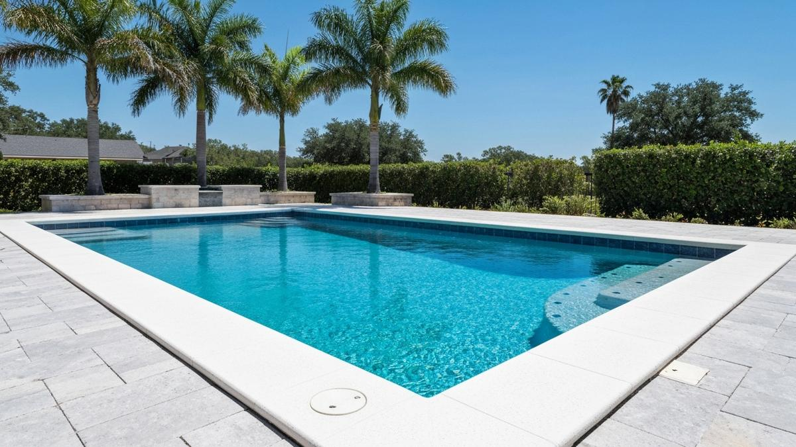

Plaster, pebble, quartz, tile repair, and structural fixes — everything your pool needs, done right the first time.
What We Offer
One team handles everything — drain, prep, finish, curing, and startup chemistry. No subcontractors. No surprises.
Classic white plaster — clean, timeless, and the most accessible price point. Best for pools on a defined budget.
View details →PebbleTec and PebbleSheen — 15–20 year lifespan, naturally textured, and built for SA's hard Edwards Aquifer water.
View details →Superior scale resistance, smooth underfoot, sparkle finish. San Antonio's most popular upgrade from basic plaster.
View details →Waterline tile and coping replacement — porcelain, mosaic, travertine, and flagstone to match any aesthetic.
View details →Free crack assessment on every job. We distinguish surface-only from structural — and fix both correctly.
View details →Hotels, HOAs, and apartment complexes across San Antonio. Industrial-grade materials, minimal downtime scheduling.
View details →Full pool remodels — new surface, tile, coping, decking, and equipment — when resurfacing alone no longer makes financial sense.
View details →Custom gunite and shotcrete pool builds for Bexar County and Hill Country lots. Freeform, geometric, and infinity designs.
View details →3D visualization, site assessment, and full design planning before construction begins. Built around your lot and how you actually use a pool.
View details →Surface Options 1 & 2
The most popular choices for San Antonio homeowners — tried-and-true plaster and the quartz upgrade that handles hard water.
Traditional plaster delivers a clean, timeless white surface at an accessible price point. Quartz aggregate adds durability and stain resistance — particularly valuable in SA's high-calcium Edwards Aquifer water (200–350 mg/L) — with a subtle sparkle and a 12–15 year lifespan. We apply both with meticulous prep work and oversee the full curing process.

Surface Option 3
PebbleTec and PebbleSheen are the premium tier — naturally textured, visually striking, and built to outlast plaster in mineral-rich water.
Pebble finishes resist chemical deterioration, staining, and etching at a level plaster simply can't match. The higher upfront cost pays for itself in extended lifespan and lower ongoing chemistry costs — especially in San Antonio's hard-water zone. We offer a wide range of pebble colors and sizes for full customization.

Tile & Coping
Waterline tile and coping take the most visible abuse — calcium scaling, UV fading, and physical wear. We replace deteriorated materials with options built to last.
Calcium from the Edwards Aquifer deposits on waterline tile faster than almost anywhere in Texas. We remove scale, replace deteriorated tile, and reset coping with materials that complement your new surface finish. Options include porcelain, ceramic, mosaic, flagstone, and concrete pavers — all grouting and sealing included.

Structural Work
San Antonio's limestone and caliche soil shifts with moisture changes, causing pool shell cracks more often than most Texas markets. Every job includes a free structural assessment.
We examine every crack — distinguishing surface-only from structural — before any resurfacing begins. Structural repairs use staples, epoxy injections, or fiberglass overlays as appropriate. Resurfacing over an unrepaired structural crack is a temporary fix that fails within 1–2 years. We won't do it.

The structural assessment is included at no extra charge with every resurfacing job. If we find something, we stop, show you, and get your approval before any additional work proceeds.
Commercial
Hotels, HOAs, apartment complexes, community centers, and schools throughout the San Antonio area — industrial materials, minimal downtime.
Commercial projects require coordination to minimize downtime and meet health code requirements. We use industrial-grade materials and schedule efficiently to get high-traffic pools back online as fast as possible. Estimates are free — and we work around your operating schedule, not the other way around.
The Process
From the first day we're on site to the day you get back in the water — here's exactly what happens.
We drain the pool and inspect every square inch of the shell for cracks, delamination, and structural issues. You get a full report before any work begins — no surprises mid-project.
Old plaster is chipped out to the shell. Structural cracks are repaired. Tile and coping replacement happens here. The shell is cleaned, prepped, and bonded for the new surface.
Plaster or aggregate is applied by our own crew — no subcontractors. Depending on finish type and pool size, application takes 1–2 days. Pebble finishes require one additional day.
We fill the pool and manage the startup chemistry protocol ourselves — calibrated specifically for San Antonio's Edwards Aquifer water. This is where most contractors cut corners. We don't.
Most jobs are complete in 5–10 days from drain to swim-ready. We walk you through the 30-day break-in protocol and give you written chemistry targets for the first month.
 Alamo Pool
Alamo Pool